Dans cette vidéo, le créateur de la chaîne **Labo Des Réseaux** explore les capacités révolutionnaires de **Claude Opus 5.5 (modèle d'Anthropic)** en matière de **motion design, d'animation et de montage vidéo**. L'outil permet de générer des séquences animées complexes, des intros percutantes et des montages verticaux complets (TikTok, Reels, Shorts) directement à partir d'un simple prompt textuel, sans nécessiter de compétences en code, de MCP ou de logiciels tiers complexes. Le modèle procède en écrivant du code pour dessiner et animer chaque image avant de convertir le tout en fichier MP4 téléchargeable.
Le test s'articule autour de trois cas d'usage principaux : la création d'une introduction stylisée (avec ou sans voix off générée par l'IA), la production d'un dessin animé éducatif de format court entièrement autonome (sur l'histoire du grain de riz et de la croissance exponentielle), et l'enrichissement d'une vidéo "talking head" (face cam) brute en y intégrant un habillage dynamique en 3D motion design. Le créateur détaille sa méthode itérative, soulignant l'importance cruciale de **fournir un contexte précis, des références artistiques, des chartes graphiques et un découpage scène par scène** pour éviter l'effet "générique" et standardisé propre aux productions d'IA de masse.
Malgré un temps de traitement allant de 8 à 30 minutes selon la complexité et quelques micro-défauts de transition ou de cohérence narrative, le résultat final s'avère **bluffant et immédiatement publiable**. Le créateur conclut sur une note nuancée : si cet outil démocratise l'accès au motion design et fluidifie les workflows de création de contenu, il prédit une **surproduction potentielle de contenus similaires** sur les réseaux sociaux. Il encourage l'utilisation de l'API d'Opus 5.5 pour automatiser et coupler le modèle à d'autres solutions de pointe (voix off pro, génération d'assets visuels) afin de conserver une réelle singularité créative.
Créer sa petite animation, sa séquence de motion design pour illustrer sa vidéo ou même confier le montage de son TikTok Reels ou Short YouTube, Claude vient de le rendre possible, tout cela sans MCP, sans abonnement supplémentaire, juste en utilisant son dernier modèle, Opus 5.5. La preuve avec cette intro de vidéo et d'autres exemples faciles à reproduire, je te montre tout de suite.
Interface & Outils : Style visuel de papier découpé et animation graphique façon motion design (type Vox ou explicatif).
Contenu textuel & Code : Textes et graphismes : 'ANIMATION', logo 'CLAUDE', 'MARKO', 'DÉMONSTRATION', 'PROMPTS - RENDUS' et fenêtres de code ou de prévisualisation.
Action / Démonstration : Le créateur présente visuellement la création d'animations et de séquences de motion design générées par intelligence artificielle.
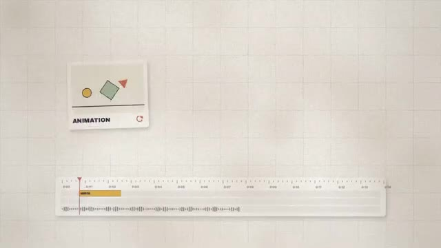
🔍 Agrandir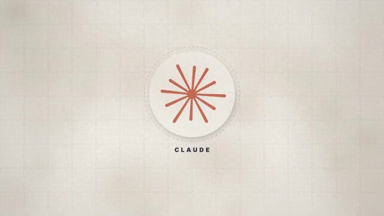
🔍 Agrandir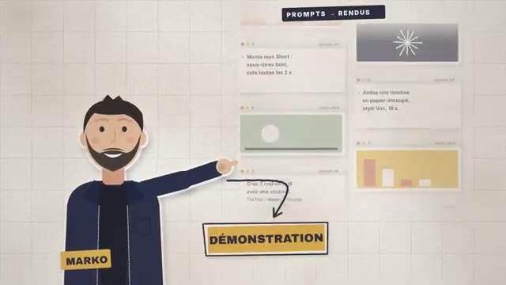
🔍 AgrandirCar oui, cette introduction a été réalisée par Claude Opus 5.5 juste à partir d'un prompt. Le nouveau modèle d'Anthropic impressionne. Et dans cette vidéo, on va s'intéresser à ses capacités de motion design. On verra donc comment j'ai réalisé cette introduction de vidéo, mais aussi comment créer un projet dans le style animation pour les réseaux.
Interface & Outils : Style graphique d'animation, habillage vidéo pour les réseaux sociaux.
Contenu textuel & Code : Textes explicatifs, icône YouTube, maquette de smartphone avec formes géométriques.
Action / Démonstration : Présentation du plan de la vidéo et introduction aux techniques de motion design et d'animation pour réseaux sociaux.
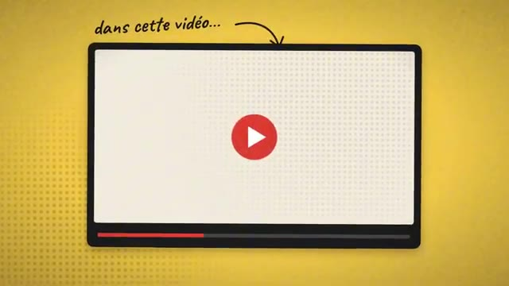
🔍 Agrandir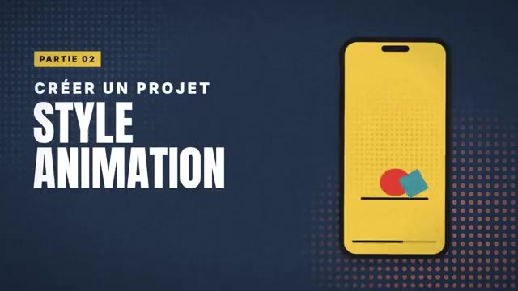
🔍 AgrandirEt dans une dernière partie, on verra si Opus 5.5 peut nous monter un Reels, un Short, un TikTok pour nos réseaux, en mélangeant face cam et motion design. Pour rappel, pour utiliser le nouveau modèle Opus 5.5, il nous faudra à minimum un abonnement Cloud Pro. Ainsi, on pourra le charger dans notre chat ou dans l'espace Coworks, ainsi si on veut le sélectionner sur Cloud Code.
Interface & Outils : Site web de Claude (claude.ai)
Contenu textuel & Code : Offres d'abonnement Free (0 €), Pro (15 €) et Max (à partir de 90 €) ; interface de chat Claude avec option de sélection de modèle.
Action / Démonstration : Le créateur montre la page des tarifs pour l'abonnement Pro requis puis présente l'interface de discussion avec le sélecteur de modèle.
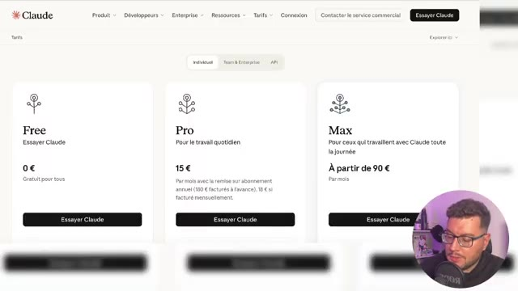
🔍 Agrandir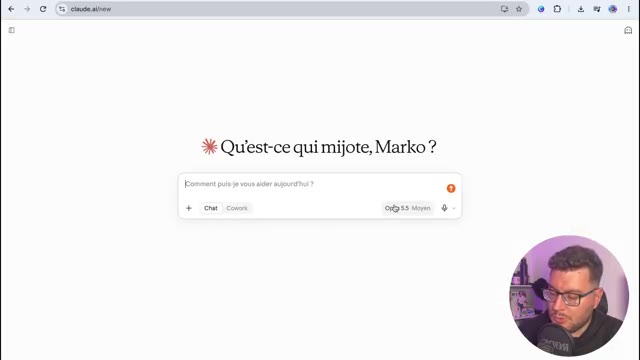
🔍 AgrandirLes exemples que je vais présenter ici se font via l'abonnement Pro, mais bien sûr, si tu as besoin de plus de crédit, Opus 5.5 est aussi disponible en API, on en reparle en fin de vidéo. Donc déjà, à froid, j'ai voulu lui demander tout simplement, créez-moi une introduction de vidéo en motion design, reprenant le texte suivant. C'est tout.
Interface & Outils : Présentation orale ou séquence sans interface partagée.
Contenu textuel & Code : Explications et conseils de création de contenu / IA.
Action / Démonstration : Démonstration et mise en contexte pratique.
Et là, Opus 5 s'est mis en route et il a commencé à me coder la vidéo. Alors quand je dis coder la vidéo, qu'est-ce qui se passe en fait ? Il va coder les images, puis les animer frame par frame pour les transformer en rendu animation web qu'il va par la suite transformer en MP4 et nous proposer de le télécharger.
Interface & Outils : Présentation orale ou séquence sans interface partagée.
Contenu textuel & Code : Explications et conseils de création de contenu / IA.
Action / Démonstration : Démonstration et mise en contexte pratique.
Donc je résume simplement. Bien sûr, il y a beaucoup plus de procédés que ça. Mais ce qu'il faut savoir, c'est que toi, en tant qu'utilisateur, tu as juste à attendre pour avoir ton animation motion design créée ici au bout de 8 minutes et téléchargeable. Donc là avec vraiment très très peu d'informations, j'ai déjà une intro complète.
Interface & Outils : Interface web de l'outil Claude (Claude.ai) et lecteur vidéo en plein écran avec incrustation de la webcam du créateur.
Contenu textuel & Code : Fichiers partagés incluant 'Intro claude opus55 16x9 (MP4)', 'Intro claude opus55 source (HTML)', minuterie de génération (~8 minutes), et texte animé 'Créer sa petite animation'.
Action / Démonstration : Le créateur présente le résultat final de l'animation motion design générée automatiquement et met en avant le bouton de téléchargement du fichier MP4.
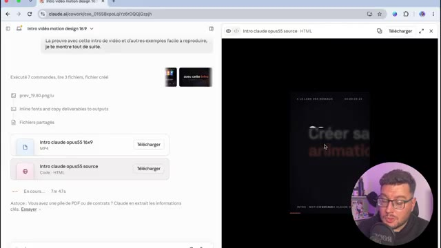
🔍 Agrandir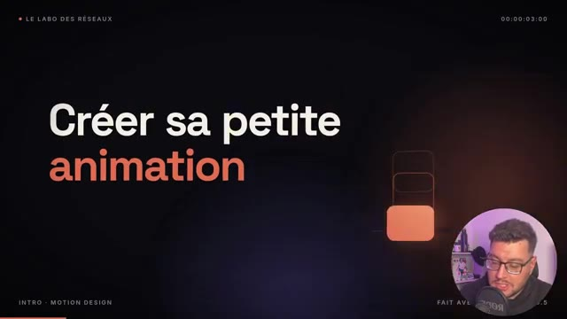
🔍 AgrandirAlors je n'ai pas de voix off sur cette intro, donc je vais continuer la conversation et demander si Claude peut me rajouter une voix off. Et là incroyable, sans même que je branche en API un logiciel comme Eleven Labs, j'aurai ma vidéo disponible avec une voix off. Bien sûr, il n'y aura pas d'émotion et ça ne sera pas trop professionnel. Mais si on la lance, créer sa petite animation, sa séquence de motion design, pour illustrer sa vidéo, ou même confier le montage de son TikTok, réel ou short YouTube.
Interface & Outils : Interface web de Claude (Anthropic) et timeline de montage vidéo.
Contenu textuel & Code : Texte de discussion avec l'IA sur la voix off, boutons de téléchargement pour "Intro claude opus55 16x9 voixoff" et "Voixoff intro seule", lecteur audio avec curseur de progression.
Action / Démonstration : Le créateur présente l'interface de l'IA Claude qui a généré automatiquement la voix off et la vidéo pour l'intro.
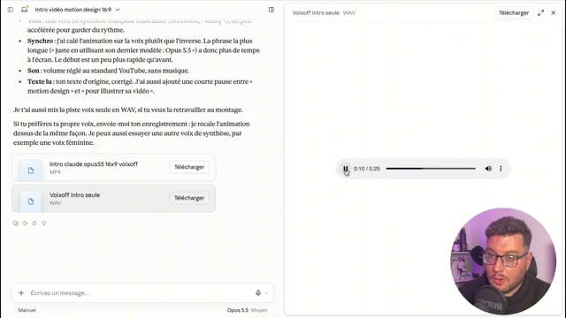
🔍 AgrandirLe résultat est là. Alors, par contre, ce résultat, même s'il est sympathique, il est très générique. Et on risque fort de rencontrer le phénomène affiche chat GPT si on prend tous de manière simple pour avoir son motion design. C'est pour ça que dans un second temps, j'ai voulu recréer l'intro en lui donnant beaucoup plus de contexte.
Interface & Outils : Interface web de l'assistant IA Claude.ai
Contenu textuel & Code : Prompt de direction artistique pour la vidéo, palette de couleurs, description des personnages, éléments graphiques et structure des scènes.
Action / Démonstration : Le créateur montre le prompt enrichi fourni à l'IA pour générer une intro de motion design plus personnalisée.
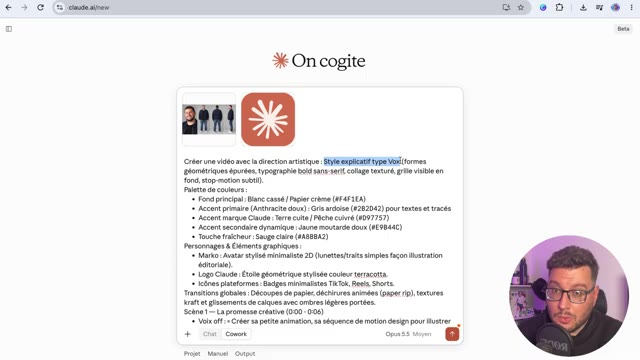
🔍 AgrandirEt ici quand je parle de contexte, c'est surtout que je lui ai donné un style propre, ici le style Vox, avec des formes géométriques épurées, typographies, bol de sens et rive, et un collage texturé gris visible en fond, stop motion subtil, une palette de couleurs avec les codes couleurs pour l'accompagner, une indication sur les transitions globales, je lui ai donné aussi une indication de voix off, les effets sonores, et très important, je lui ai donné des références.
Interface & Outils : Document texte / Interface de rédaction ou de prise de notes.
Contenu textuel & Code : Texte descriptif de direction artistique (style Vox, typographie bold sans-serif, palette de couleurs, transitions globales, scène 1, scène 3).
Action / Démonstration : Le créateur présente et commente son document de direction artistique et de scénarisation vidéo.
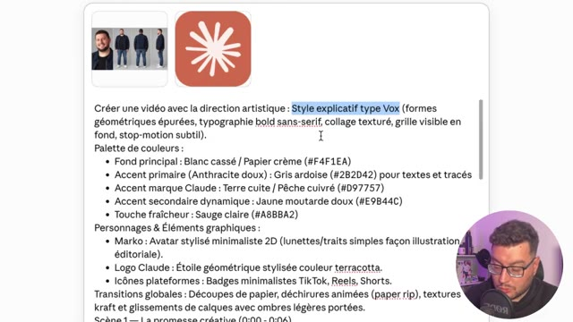
🔍 Agrandir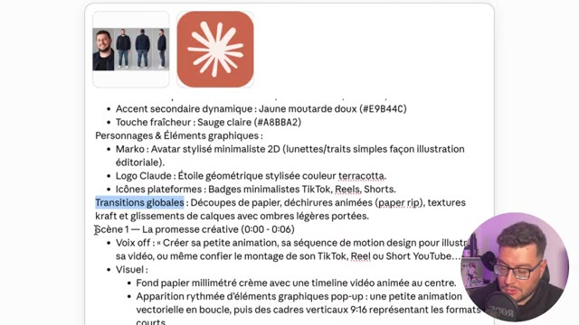
🔍 Agrandir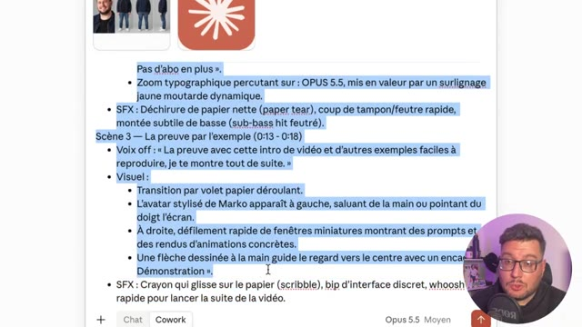
🔍 AgrandirJe vais donner une fiche caractère référence pour essayer de me créer un motion design. Et j'ai aussi donné le logo de Claude puisqu'il est mentionné dans la vidéo. Ensuite pour pouvoir maîtriser ce qui se passe à l'écran, j'ai refait scène par scène avec le redattage de celle-ci pour bien avoir ce qui s'affiche avec le texte qui est dit. Je génère. Ici j'en ai une pour une dizaine de minutes.
Interface & Outils : Interface web de Claude AI / Cowork
Contenu textuel & Code : Prompt de direction artistique (style Vox), codes couleur, progression des tâches (construire l'animation, générer les SFX, vérifier les images).
Action / Démonstration : Le créateur montre la configuration et le suivi de la création du motion design via l'intelligence artificielle Claude.
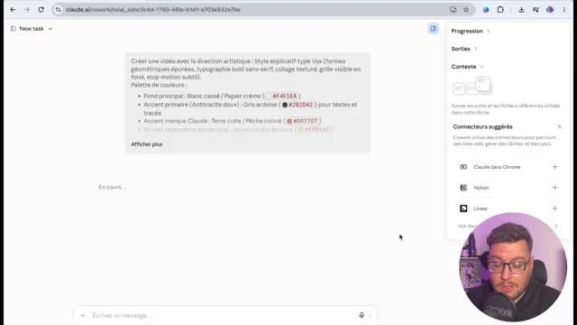
🔍 Agrandir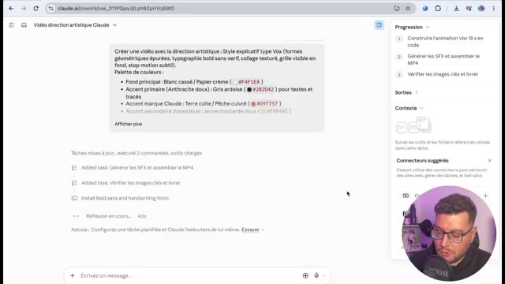
🔍 AgrandirIl a pris la décision de ne pas me mettre les lunettes parce que sur le point que j'avais fourni j'avais dit avec des lunettes mais la photo n'avait pas de lunettes. donc très très bien, et il a ajouté un petit texte supplémentaire, donc prise d'initiative de sa part, pourquoi pas, et en téléchargeant la vidéo et en la lançant, c'est celle que tu as vue en introduction de cette vidéo. On continue les tests avec cette fois-ci la volonté de créer un format récurrent sur TikTok 100% animé.
Interface & Outils : Lecteur vidéo (QuickTime ou similaire) avec barre de progression et timeline audio/vidéo.
Contenu textuel & Code : Un visuel de type Polaroid avec des formes géométriques et le mot "ANIMATION", ainsi qu'une timeline avec une piste audio et un bloc orange "ANIMATION".
Action / Démonstration : Le créateur visionne la vidéo générée pour analyser le résultat de l'animation.
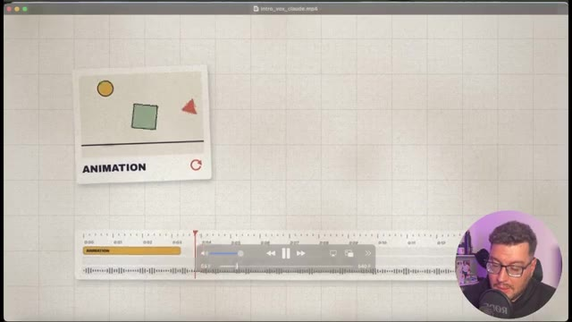
🔍 AgrandirDans un premier temps travail préparatoire, je vais demander de me trouver une histoire pour un dessin animé éducatif d'une minute au format TikTok, prendre une histoire connue avec un hook fort et une révélation à la fin. opus 5 réfléchit donc moi je les mets en moyen sachant qu'on peut le mettre aussi en élevé mais ça va user beaucoup plus de crédit néanmoins on n'a pas la même sensation qu'on a avec gpt6 astra et en termes de crédit on a le sentiment de pouvoir faire beaucoup plus de choses même si astra a sorti les modèles sol et luna récemment et il m'a sorti une histoire que je pourrais modifier je pourrais donner des références ici là je vais laisser travailler en paix pour
Interface & Outils : Interface web de l'assistant IA (Claude / Cowork) avec panneau latéral de contexte et de progression.
Contenu textuel & Code : Prompts textuels pour la création d'un dessin animé éducatif TikTok, suggestions d'histoires (croissance exponentielle, Semmelweis, Ératosthène), et logs d'exécution de commandes.
Action / Démonstration : Le créateur rédige et envoie des prompts successifs à l'IA pour concevoir et structurer le contenu d'une vidéo courte éducative.
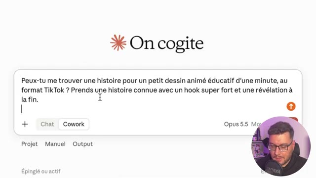
🔍 Agrandir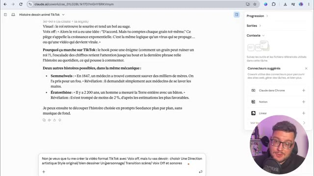
🔍 Agrandir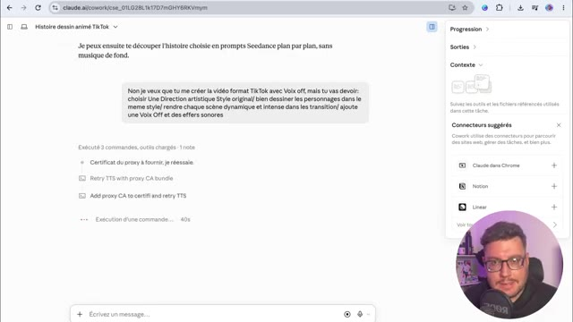
🔍 Agrandiravoir mon petit dessin animé en motion design d'une minute on est parti voix off essais sonores tout est en train de se créer on va accélérer la vidéo ici on en a eu pour 27 minutes de travail donc c'est quand même assez conséquent si on veut le mettre en place dans un workflow répété faudra plutôt se tourner vers une automatisation avec le code et l'api on va pouvoir télécharger et regarder le reste droit a failli perdre tout son royaume à cause d'un seul grain de riz il y a très longtemps en inde un vieux sage invente un jeu tout nouveau les échecs Magnifique. Demande-moi ce que tu veux.
Interface & Outils : Lecteur vidéo / Sortie de génération de motion design.
Contenu textuel & Code : Personnage animé en 2D sur fond rayonné orange avec des confettis, texte "DEMANDE-MOI CE QUE" affiché.
Action / Démonstration : Présentation du résultat final du motion design créé automatiquement (dessin animé de type format vertical/Reels/Shorts).
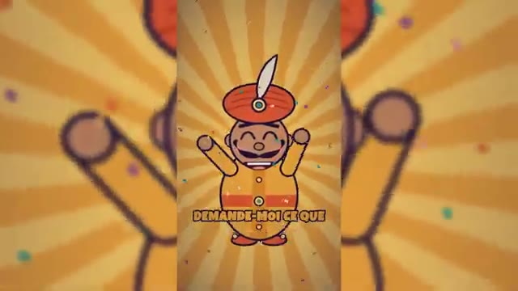
🔍 AgrandirUn grain de riz sur la première case. Deux sur la deuxième. Quatre sur la troisième. Et tu doubles jusqu'à la dernière. Ah, c'est tout. Accord. Case 10, 512 grains. Une poignée. Case 21, plus d'un million de grains. Case 32, plus de 2 milliards.
Interface & Outils : Graphismes animés au format vertical (style Shorts/Reels) illustrant le problème mathématique du riz sur l'échiquier.
Contenu textuel & Code : Textes : "LA RÈGLE DU SAGE", "SUR LA PREMIÈRE CASE", "C'EST TOUT ?", "CASE 32", "884 443 379", "CASE TRENTE-DEUX".
Action / Démonstration : Explication animée de la progression géométrique des grains de riz sur l'échiquier.
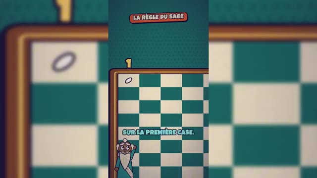
🔍 Agrandir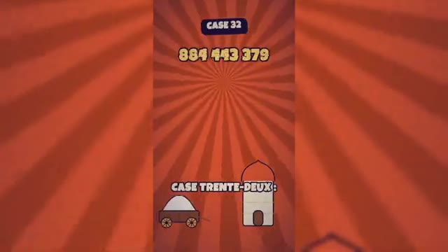
🔍 Agrandir50 tonnes. Et il reste encore 32 cases. Au total, 18 milliards de milliards de grains. des siècles de toute la récolte mondiale de riz. Aucun royaume au monde ne peut payer ça. Alors le roi a une idée. D'accord, mais tu les comptes toi-même, un par un. Ce piège a un nom, la croissance exponentielle.
Interface & Outils : Animation vidéo explicative (style motion design).
Contenu textuel & Code : Textes : '50 TONNES', 'TRÉSOR : VIDE', 'AUCUN ROYAUME AU MONDE', 'CE PIÈGE A UN NOM'.
Action / Démonstration : Animation visuelle illustrant l'accumulation de poids de riz, l'appauvrissement du royaume et l'introduction graphique de la notion de croissance exponentielle.
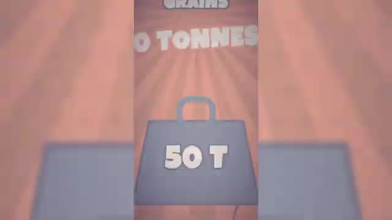
🔍 Agrandir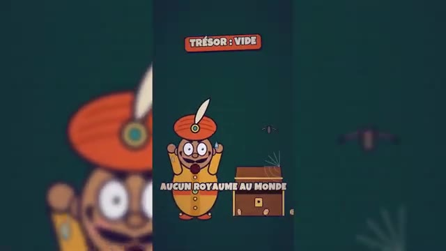
🔍 Agrandir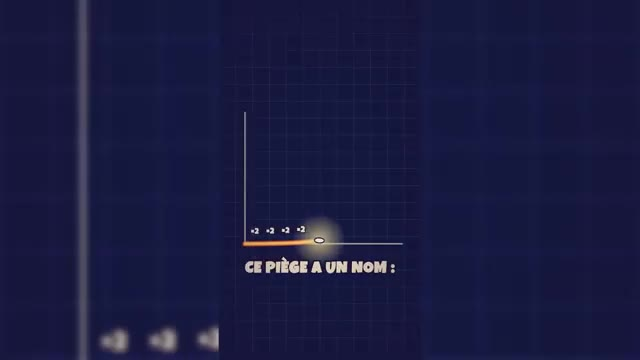
🔍 AgrandirEt c'est exactement comme ça qu'une vidéo devient virale. Alors déjà en termes de rendu, on est sur des motion design proches du dessin animé. Donc ça c'est assez sympa, le hook est bien travaillé. L'histoire par contre je trouve elle est assez décousue, la voix off n'est pas trop adaptée. Et au final j'aurais peut-être dû relire certains passages parce que je pense qu'il manque des petits bouts pour pouvoir assembler le tableau.
Interface & Outils : Vidéo de démonstration au format vertical (Short/Reel) avec incrustation webcam du créateur.
Contenu textuel & Code : Textes incrustés à l'écran : "EN INDE, IL Y A LONGTEMPS", "IL Y A TRÈS LONGTEMPS", "LA RÈGLE DU SAGE", "DEUX SUR LA DEUXIÈME."
Action / Démonstration : Le créateur analyse et commente un exemple de vidéo virale au format vertical présentant une histoire animée.
Mais franchement sur un travail autonome d'une minute c'est assez surprenant. Surtout la façon d'animer les personnages au motion design que je trouve très rigolo. Donc le format court ça marche et imaginons maintenant on souhaite vraiment le travailler. Dans le cas présent j'ai tourné ma vidéo style vertical pour TikTok, Instagram et Youtube.
Interface & Outils : Interface web de l'outil conversationnel "On cogite"
Contenu textuel & Code : Fichier vidéo "Opus 55.mp4" chargé, champ de texte avec le prompt "Voici ma vidéo", modèle sélectionné "Opus 5.5 Moyen"
Action / Démonstration : Importation et préparation d'un fichier vidéo dans l'interface de l'outil "On cogite" pour analyse ou traitement.
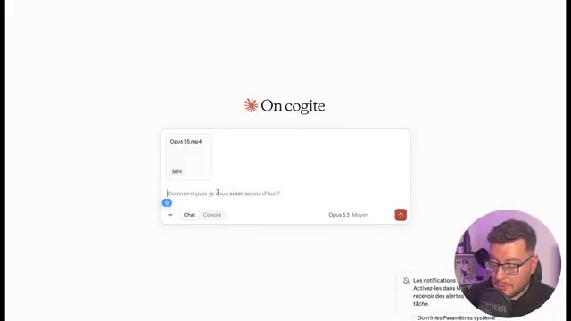
🔍 Agrandir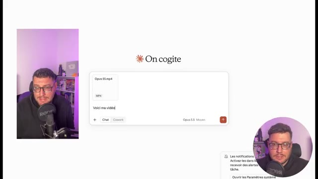
🔍 AgrandirQui présente justement le motion design grâce à Opus 5.5. Et donc je vais donner cette vidéo où il n'y a aucun montage, aucune animation, aucune motion design. C'est seulement moi qui parle devant la caméra. Voici ma vidéo format 9-16ème qui présente les nouveautés de motion design d'Opus 5.5.
Interface & Outils : Interface web de l'outil d'intelligence artificielle 'On cogite' (Opus 5.5).
Contenu textuel & Code : Fichier vidéo 'Opus 55.mp4' joint dans le chat avec un prompt textuel décrivant la modification en format 9:16.
Action / Démonstration : Le créateur écrit un prompt pour demander à Opus 5.5 d'ajouter du motion design à une vidéo face caméra.
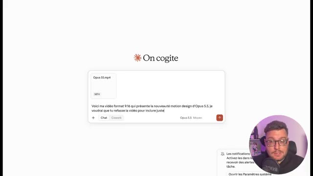
🔍 Agrandir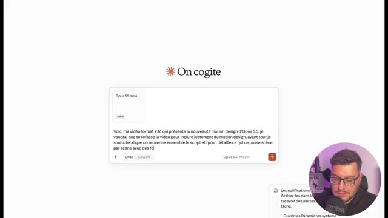
🔍 AgrandirJe voudrais que tu refasses la vidéo pour inclure justement du motion design. Avant tout je souhaite que tu reprends l'ensemble du script, que tu détailles ce qui se passe scène par scène. Comme ça on peut corriger ensemble. et je voudrais un style 3D motion design avec beaucoup de rythme et bien expliqué sur les parties techniques avec des schémas animés.
Interface & Outils : Présentation orale ou séquence sans interface partagée.
Contenu textuel & Code : Explications et conseils de création de contenu / IA.
Action / Démonstration : Démonstration et mise en contexte pratique.
Ma vidéo a été analysée, j'ai mon découpage qui a été fait, une direction artistique a été proposée et je suis d'accord même s'il me demande de changer le texte, je lui dis non non non, je ne veux pas du tout changer le texte et je veux que tu reprennes ma voix de narrateur. Je ne sais pas si c'est possible, on va voir tout de suite en le soumettant et là on laisse travailler l'IA.
Interface & Outils : Présentation orale ou séquence sans interface partagée.
Contenu textuel & Code : Explications et conseils de création de contenu / IA.
Action / Démonstration : Démonstration et mise en contexte pratique.
Alors ici, on a dû relancer Claude une deuxième fois parce que la limite d'action avait été atteinte pour la réponse. Donc, j'ai redemandé de continuer et la vidéo est prête. Alors là, le travail m'a pris un petit peu plus de 30 minutes. Donc, encore une fois, il faut avoir bien ça à l'esprit. La solution n'est pas magique. Elle demande du travail de contexte en amont.
Interface & Outils : Présentation orale ou séquence sans interface partagée.
Contenu textuel & Code : Explications et conseils de création de contenu / IA.
Action / Démonstration : Démonstration et mise en contexte pratique.
Elle demande du temps. Mais à la fin, on va voir le résultat en téléchargeant et en le lançant. Est-ce que ça ne vous a plus besoin de logiciel ou de compétences pour faire du motion design ? Une phrase avec Opus 5.5, Claude crée ta vidéo, ton animation. Et même pas besoin de skills de MCP ou d'abonnements supplémentaires. Non, non, en une seule phrase tu as ta vidéo, comme c'est intro en motion design.
Interface & Outils : Vidéo au format vertical (Shorts/Reels) avec éléments graphiques incrustés (bulles de texte et animations de l'interface).
Contenu textuel & Code : Textes incrustés 'OPUS 5.5', '1 phrase', 'Une intro 3D néon violet sur l', '1 VIDÉO', et 'rendu_motion.mp4'.
Action / Démonstration : Le présentateur explique les capacités de l'outil et montre des animations textuelles illustrant le processus de création par IA.
Dynamiser tes présentations, illustrer un passage de ta vidéo, créer du contenu viral pour tes réseaux. Les possibilités sont infinies, mais si un seul prompt te suffit, encore faut-il réussir à le structurer, pour ne pas avoir la même bouillie que tout le monde va générer. Alors tu vas devoir donner du contexte, des références et une direction artistique. Bref, être le plus précis possible.
Interface & Outils : Interface vidéo verticale de type YouTube Shorts / Reels avec animations graphiques et incrustation webcam.
Contenu textuel & Code : Textes : 'Tes présentations', 'Ton prompt', 'Un prompt structuré', 'Direction artistique', 'Références', 'Contexte'.
Action / Démonstration : Le créateur explique la structure idéale d'un prompt avec un visuel de blocs empilés.
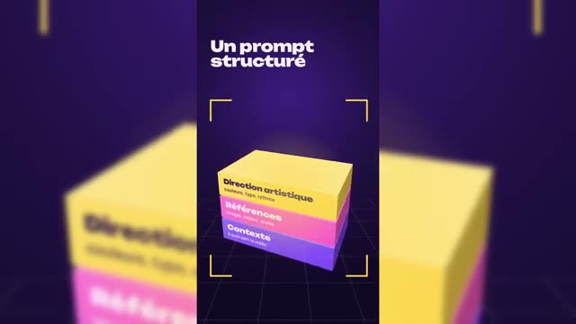
🔍 AgrandirEnsuite, Clodopus 5 écrit du code qui dessine et anime chaque image comme une page web animée et Clod te transforme le tout en fichier MP4 téléchargé. Assur, tu peux améliorer le workflow en ajoutant en API des voix off pro ou encore des images et vidéos IA générées par les meilleurs modèles du marché.
Interface & Outils : Interface graphique animée de présentation de workflow d'intelligence artificielle.
Contenu textuel & Code : Textes : "Claude Opus 5.5", "Il écrit du code", "Export en MP4", "Améliorer le workflow", "Voix off pro", "Images et vidéos IA".
Action / Démonstration : Présentation étape par étape du fonctionnement de Claude Opus 5.5 pour la génération de code animé et son exportation vidéo.
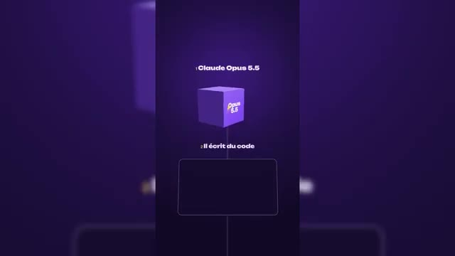
🔍 Agrandir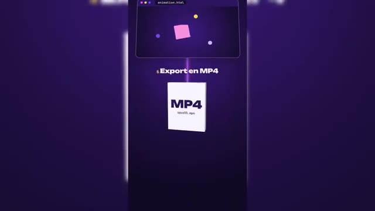
🔍 Agrandir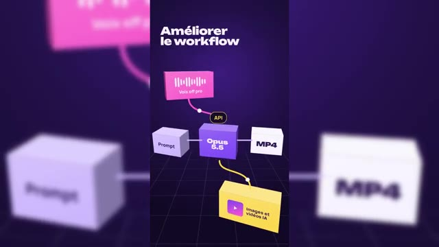
🔍 AgrandirBref, le résultat peut être très variable et c'est sûr qu'on va être un peu inondé sur les réseaux. Une bonne façon aussi de rappeler que le contenu pro animé par de vrais motion designers fera encore plus la différence. Alors je suis agréablement surpris. Il a gardé ma vidéo et mon audio original en incluant dedans le motion design et en mettant du rythme, en bien expliquant l'ensemble des schémas.
Interface & Outils : Studio d'enregistrement personnel / format vidéo vertical type Reel ou Short YouTube avec habillage graphique animé.
Contenu textuel & Code : Textes incrustés dynamiquement : 'Résultat variable', 'De vrais motion designers font encore plus la différence', 'Même pas besoin de', 'OPUS 5.5'.
Action / Démonstration : Le créateur commente l'impact des outils d'IA et de l'automatisation sur les réseaux sociaux, illustré par des sous-titres animés et des graphismes.
Franchement tout est clair. Il y a peut-être 2-3 défauts de transition et puis à la fin on voit aussi qu'il arrive du mal à illustrer cette toute dernière partie. mais franchement le livrable est là, je vais pouvoir le publier sur les réseaux sans aucun souci. C'est très impressionnant et j'en viens donc à cette conclusion que ça peut être un outil pour nous accompagner lors de présentations, lors de vidéos éducatives ou pour nous assister dans le montage pour expliquer des parties en motion design.
Interface & Outils : Studio vidéo et graphismes incrustés de type tutoriel.
Contenu textuel & Code : Texte '1 VIDÉO', barre de progression 'rendu_motion.mp4' et encadré 'Ton prompt'.
Action / Démonstration : Le créateur présente ses conclusions sur l'outil testé dans la vidéo.
Comme je le dis dans ce petit reel TikTok, est-ce qu'on ne va pas assister à une surproduction de ce type de vidéos et du coup, on va arriver à des résultats qui vont se ressembler tous avec des techniques de prompt qui vont être partagées et des styles qui vont se copier les uns les autres. Donc voilà, là c'est tout nouveau, c'est tout frais. On va en entendre parler sur les réseaux.
Interface & Outils : AUCUNE
Contenu textuel & Code : AUCUN
Action / Démonstration : AUCUNE
Est-ce qu'au final, ça ne va pas perdre de son charme et à force d'être utilisé, ça va être mis de côté par les viewers ? C'est quand même une super solution. Le prix en API, si on veut l'intégrer à un workflow cloud code dans une automatisation, sachant qu'en API, on peut brancher une voix off, par exemple, d'11Labs ou de fiches audio et pourquoi pas aussi l'API de XFIL pour pouvoir générer ces assets avec les meilleurs modèles du marché.
Interface & Outils : Site web de Claude (Anthropic) - section Tarifs API.
Contenu textuel & Code : Tableaux de prix pour les modèles Fable 5.1, Opus 5.5, Sonnet 5 et Haiku 4.5 avec les détails de mise en cache, d'entrée et de sortie.
Action / Démonstration : Le créateur présente les tarifs des différentes API de Claude pour illustrer leur intégration dans des workflows cloud.
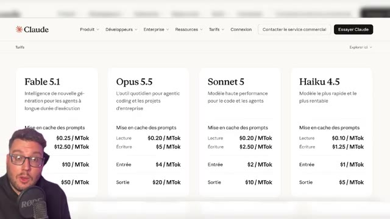
🔍 Agrandir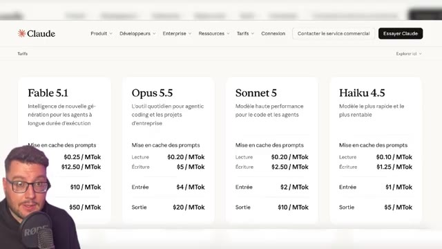
🔍 AgrandirÇa, je pense, on en fera une vidéo dédiée. Et bien sûr, ce modèle Opus 5.5, il ne va pas que servir à faire du motion design. Il est très bon aussi dans tout ce qui va être création d'applications, création de sites internet, dans le code et dans les automatisations. Bref, à vous de le tester de votre côté. Merci d'avoir suivi ce tuto et je te dis à très bientôt sur le Labo des Réseaux pour de nouvelles vidéos.
Interface & Outils : Aucune interface logicielle ou web affichée, plan de type "talking head".
Contenu textuel & Code : Aucun texte, prompt ou menu visible à l'écran.
Action / Démonstration : Le créateur conclut le tutoriel et remercie les spectateurs.